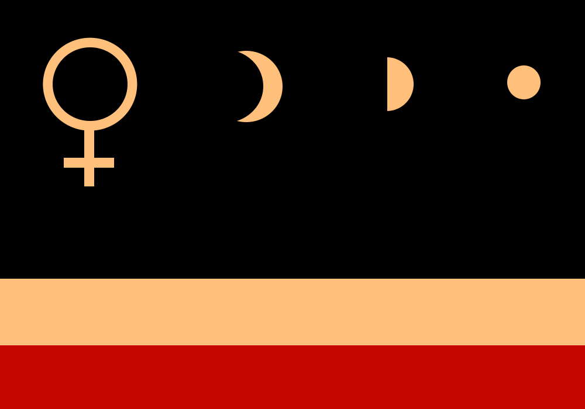

DISTANT WORLDS
 Solar System
Solar System
 Name: United LunaTerra
Name: United LunaTerra
Star System(s): Solar System, Ross 128, Cooper's Star, Kailen, Alpha Centauri
Planet(s): Terra, Mercury, Titan, Pluto, Ross 128 b, Teegarden's Star C, Proxima Centauri b
Description:
Earth was dying, with each passing year our blue planet, Earth, was becoming less habitable for humanity, in certain regions events frequency was increasing, the soil which was feeding us wasn’t capable of giving us food anymore. Catastrophic heat was rising, Middle East became hell on Earth, people from Asias were migrating because of dying soil. Goverments of Earth, Collectively agreed for own safety unite under one Government, United Nations.
After Solar System Colonisation Era, When humans settled on Moon, Mars and Venus. United Nations was renamed to United Terra, Representatives of Earth-Moon System. UT decided to move their headquarters to Moon, because of Dying Earth.
In Current Year United Terra holds largest amount of Fleet in Solar System, Their Variant of Jackson Class Propulsive Engine allowed them to compete with planets like Martian Technocratic Republic and Venusian Congress. Certain areas on Earth managed to survive, Forests are still blooming there, and Soil provide largest farms out there.
Alien Artefacts on Venus, One of which was Engine of unknown specifications, United Terra joint with Venusian Congress reverse engineered the engine, which opened humans entire new aspect of space exploration. Interstellar. Invented by Monte Willson, The Luna-Class FTL Engines capable acceleration of 1,200 C. High Frequency Shields reverse engineered from Venusian alien ship, is able to endure FTL travel which protects Kepler-class Cruisers from Time Dilation and fatal destruction of ship and laws of physics which can be caused by mechanical object traveling faster than light. Some Lunarians think the Venusian alien ship was a gift from Gods themselves to humanity, scientific community called the aliens of the fallen ship as “Deus Sentis” . FTL travellers experience High G overloads and are not capable of travels to stars farther than 15 light years. Humans during travel are hibernated in
cryopods. During hibernation human body does not experience huge effects of High G allowing them to endure most of travel.

Name: Martian Technocratic Republic
Star System(s): Solar System, TRAPPIST-1, Cooper's Star, Barnard's Star
Planet(s): Mars, Ceres, Titan, Triton, Tau Ceti (Formerly), TRAPPIST-1 E, Vishapakar, Atlantis
Description:
Mars, once being second colony of Earth, declared it’s own independence after extracting viable resources from Asteroid Belt, Dependancy on Terra was decreasing with each passing Sol, Their Jackson Class Propulsion Engines Invention were huge step towards becoming independent, Mars had greatest minds competing with Terra for creating new generation of normal cruise engines. Robert Jackson, lead of engineering and innovation of Martian Technate, alongside Jack Florence, Engine was based on Venusian Alien Ships main propulsive engines, The Ship’s engines are capable of deforming space and time to accelerate itself forward, an Alcubierre Engine one would call, but anything higher than 2% of engine power nothing could protect the destructive G’s ship would experience. Humans across entire system still question apperanace of alien technology in Solar System. Martians firmly share opinion with Venusians that Aliens were gathering information about solar system during era when Venus and Mars were habitable Terras unlike molten Earth of that time. Terranians believe the ship carried battle loss due to its observed damages and escaped to Habitable Venus.
Alien Technology research granted Mars to become second largest Fleet manufacturer after Ceres Shipyard. Their Battle Ships are unmatched across entire system, MTR Juggernaut is their newest and strongest ship ever manufactured in Solar System. Their Science Vessels are shadowed by Terran Kepler-Class Cruiser, with their engine only capable accelerating twice less, 620 C.
Mars Cities are the largest in Solar System, they won their spot after catastrophic events of Dying Earth destroying most of what humanity has built through the history. Grande Olimp (Great Olympus) City surrounding mountain Olympus became capital city of MTR, which spans across entire mountain encircling it.

Name: Venusian Congress
Star System(s): Solar System
Planet(s): Venus
Description:
During Colonisation era of Solar System, Previously knows as Russians, always dreamt to colonise the planet which USSR landed first on, Venera. Congress compared to UT, MTR, CS is young nation. Their ambitious project, Floating city “Novaya Venera” (New Venus), To this date, The City it still being constructed in above atmosphere of Venus. The Dream of making Venus habitable once again, always motived Vereyancev to reach their goal, Bombarding the planet to blow the clouds from surface and cool down the planet. Many do not share same views, Interstellar Cruisers provide them ability to settle on planets less melting than Venus.
Venusian Congress HQ “Novaya Venera” is considered Largest Atmospheric Station inside Solar System. One of their primary goals is to reveal secrets the crashed alien cruiser hides as by current.
Once Primary Stage of Novaya Venera will be finished, Congress will Deploy Hydrogen Filled Gigantic Balloons combined with Propulsion engines. Hydrogen Balloons will significantly decrease fuel usage by engines to keep city afloat. Venusian Congress will kill momentus and park city above clouds above alien ship. Slowly decreasing from orbit.
All of this is huge Collaboration between Asteroid Belt (Ceres Shipyards), And Inner Planets
Under the treaty between Venusian Congress, United Terra and Martian Technocratic Republic, the Alien artefacts can be researched and reverse engineered by all 3 Sides.
Venusian Congress holds the right to store the database downloaded from Alien Ship for further decryption attempt and analysis.
Stellar Neighborhood
Name: Barnard's Workers Party | Ideology: Communism
Star System(s) Barnard's Star
Planet(s): Vishapakar
Description:
The ruling party of Barnard's Star, known as the Barnard's Workers Party, emerged as the dominant force following the arrival of an expedition from LunaTerra aboard the Kepler-Class Interstellar Cruiser Model 2 during the FTL Genesis era. Settling on the Cool Marine SuperTerra, Barnard's Star b, the planet's surface bore striking resemblances to rivers and erosion formations reminiscent of a dragon's tail.
The members of the expedition traced their ancestry to Chinese and Armenian roots, leading them to christen the planet Vishapakar or Lóng shí, signifying Dragon's Stone. With the establishment of the Settled Exoplanets Defense Treaty, the Ophiuchus Autonomous Province, in defiance of ULT's threats, resolved to assert its independence from the United LunaTerra. Embracing a communistic ideology inspired by Old Earth beliefs, Vishapakar became a crucial military partner within the Defense Treaty.
The Asteroid Military Complexes TianLong, ShenLong, and DiLong, situated on orbit of Vishapakar, played a pivotal role in the expansion of the fleet of the Settled Exoplanets Defense Force (SEDF). Despite challenges and external pressures, the commitment to autonomy and defense cooperation remained steadfast, shaping Vishapakar into an integral player within the interstellar geopolitical landscape.
Name: Cetus Federal Republic | Ideology: Democracy
Station(s): Menkar Orbital Gateway, Diphda Celestial Hub, Cetus Stellar Oasis, Yz Ceti Refinery
Star System(s): Menkar, Diphda, *Tau Ceti, Yz Ceti,
Planet(s): Tau Ceti B,C,D,E,F,G,H ; Yz Ceti A,B,C ;
Description:
The Cetus Federal Republic, a seceding entity from the Martina Technocratic Republic, has established itself in the Tau Ceti star system and is progressively extending its influence to include the Yz Ceti, Menkar, and Diphda stars. Their territorial dominion spans across the entire Cetus Constellation. Expressing strong animosity towards the Solar System, they have gone to the extent of adopting a new time format, diverging from the standard Terra time, based on the rotational period of the pulsar PSR J0108−1431 within the Cetus Constellation when observed from Earth.
Despite an invitation from the Settled Exoplanets Defense Treaty to join the union, the Cetus Federal Republic opted to remain an observer state, declining the opportunity to become a full member.
Continue xxxxxxx

Name:
Star System(s):
Planet(s):
Description: